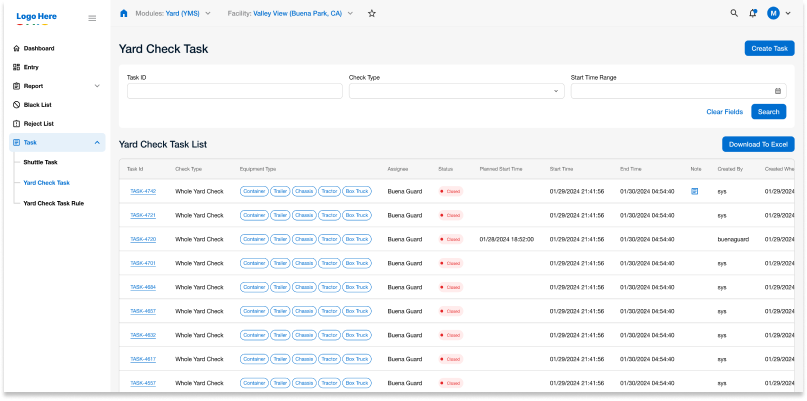
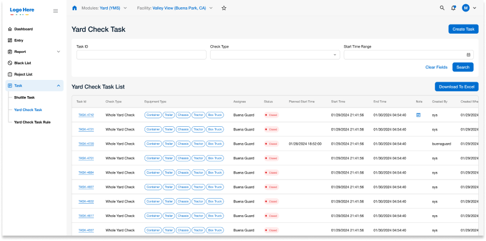

YMS
SaaS Platform for Yard Management
Overview
The YMS (Yard Management System) platform is designed to facilitate driver management, truck and trailer data profiles, and real-time detention and delay status updates. As the UI Designer, I was responsible for refreshing the existing design to make it cleaner and more streamlined. Additionally, I contributed to a few UX adjustments to resolve inconsistencies in some user flows. My work included designing seven key functions: Sign Up / Sign In, Dashboard, Entry, Report, Black List, Reject List, and Task.
Project Background
The original YMS platform had a dated and cluttered interface that made navigation and data retrieval challenging for users. My objective was to enhance the overall user experience by implementing a modern design approach. This included introducing a new dashboard for quick access to critical information, updating existing layouts for better organization, and refining specific user flows for smoother navigation.
User Interview & Feedback
Every time I need to find specific cargo or truck information, I have to click through multiple pages. It's time-consuming.A more intuitive interface would make things much easier.
We manage dozens of trucks every day, but the system does not clearly update task statuses. Sometimes driver-submitted statuses don't reflect in real time, which makes communication difficult.
Many details, like company names and license plates, remain the same for repeated tasks, but we have to manually enter them every time. It's inefficient.
Sometimes, we need to check information on the go, but the system is barely usable on mobile. Buttons are too small, and the layout is unresponsive.
We need to generate regular reports, but the system only provides spreadsheets with raw data. Without clear charts, analyzing information is frustrating.
There's no clear role differentiation in the system. Admins and regular users see almost the same dashboard, making it harder for non-admins to navigate.
Problem research
Weaness 1
Missed delivery deadlines leading to customer dissatisfaction
Weaness 2
Increased operational costs due to inefficient routing
Weaness 3
High stress levels from constant uncertainty about fleet operations
Persona
Site Map
Value
Enhanced Driver Management
Improved tools for managing driver profiles and activities
Data Organization
Updated layouts for truck and trailer data profiles, allowing easier data retrieval
Real-Time Status Updates
Clearer detention and delay status updates for quick decision-making
Design Challenges and Solutions
1. Inconsistent User Flows
Challenge
Certain user flows were inefficient and confusing, leading to user frustration
Solution
Refined the navigation structure and adjusted user flows in specific functions, such as Report and Task, to create a more cohesive experience.
2. Outdated Design System
Challenge
The original YMS interface was cluttered and difficult to navigate, making it hard for users to find information quickly
Solution
Implemented a modern, modular design system, organizing content logically to improve accessibility and ease of use
 

3. Dashboard Introduction
Challenge
The original YMS lacked a central dashboard, making it difficult for users to access key information at a glance
Solution
Designed a new dashboard to give users an overview of essential metrics, improving decision-making and user engagement
Reflection & Future Improvements
Working on the YMS platform highlighted the importance of a well-structured design system in enterprise applications. The project emphasized the need for clarity and functionality, especially in complex workflows. Moving forward, I would explore further UX enhancements to make the platform even more intuitive and responsive to user needs.
Results
The revamped YMS platform resulted in a more efficient and user-friendly interface, reducing task completion times and increasing user satisfaction. Users found it easier to navigate, access data, and manage tasks due to the cleaner layout and improved user flows. The addition of the dashboard provided quick insights into key metrics, supporting better decision-making.